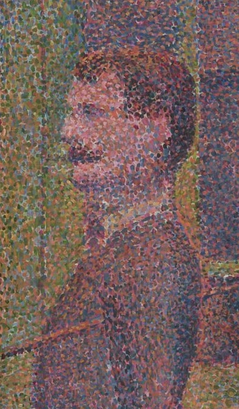
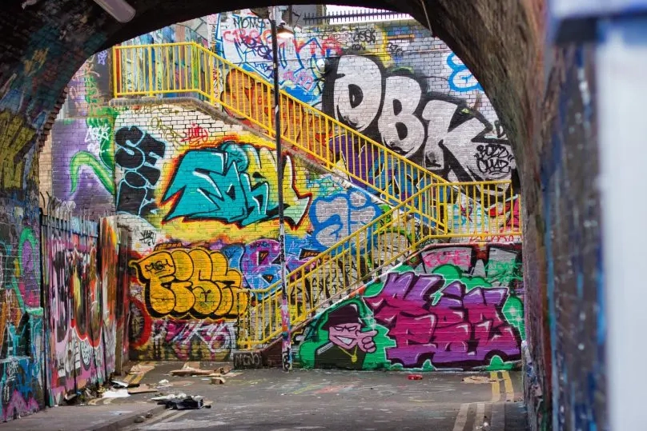

A tool I developed for quickly creating interesting textures for 3d objects. By manipulating decals through a range of parameters users can control aspects like size, rotation and layering to achieve customized textures that enhance the detail and visual appeal of their 3d models with ease.
DownloadIn the past I’ve built many small tools for game projects, mostly for editing levels or managing art assets but I wanted to make somethnig not just for a speci c game but a tool that would be useful to a more general audience but I wasn’t sure what that would be. An idea came when I was working on a prototype and tasked with creating buildings in a paper cut out style inspired by chaotic gra ti. So I setup a system that used blender geometry nodes and a small python script that then went into a substance designer setup to generate a texture and mesh. As I developed these tools further for the project I found they were quite exible in achieving a range of di erent styles, however due to how I had set it up it was di cult to experiment and make changes quickly. Also if the project had been expanded the setup would have been di cult for anyone else to use but I thought it might be something that other people would nd useful so I decided to expand it into it’s own dedicated tool. Initially I had also wanted to do this as a unity plugin however I had ran into issues in the past when trying to access unitys baked ao for my own textures and I thought it might limit the usefulness by being tied to one engine. The other main reason was that I wanted to focus on design rather than getting caught up in unity speci c details. One of the main problems with this type of texturing is that each object needs it’s own texture, this isn’t so bad for characters but generally environments try to t multiple objects on the same texture using trim or atlases. Early on I experimented with doing the scattering in engine using a shader technique called texture bombing (https://developer.nvidia.com/gpugems/gpugems/part-iii-materials/chapter-20-texture-bombing). I was able to achieve a similar looking result through the shader which meant that each object didn’t need a separate texture, and the resolution was only limited by the size of the decal meaning you could have very dense patterns that were still perfectly crisp when you get close to them. Unfortunately this approached introduced many limitations including, the shader getting exponentially more expensive with larger decal sizes, supporting non square textures would have been a lot of extra work and the approach would have been di cult to turn into something general purpose since di erent features often required completely di erent shader setups. I would probably look further into this though if attempting to do a large game with similar texturing techniques.
Obduction art tools
 The first few weeks were spent getting a rough version of the software together as quickly as possible. I started by getting a mesh that you could pan around and view from different angles and then I got decals working by drawing objects to a render texture that was then used for the material on the mesh. At rst I was just picking random positions for the decals but I remembered that I could use blue noise to make the scattering much more appealing. I followed a good video by sebastian lague to get that working https://www.youtube.com/watch?v=7WcmyxyFO7o. I knew I wanted baked light to somehow inuence the properties of the decals but I wasn’t sure how to approach that yet so I just baked some textures in substance painter for my example scene so that I could start experimenting without having to get baked lighting working. The next thing to do was get some way of editing the properties, up until this point I had just been testing things in engine. I had encountered issues with other ui systems in the past and wanted to try something new so I decided on using ImGui as the ui library for the project. It took a couple days to get used to but eventually I got a basic layout with some sliders that I could use to tweak the decal settings, and with that I had a basic version of the program obviously missing a lot of features but it allowed me to play around with the settings and showed that the idea might work.
The next major step was getting some way of calculating the ambient occlussion maps in the software without having to bring in external textures I looked into a lot of different approaches for this and found and relatively easy method that allowed the textured to be rendered in a shader, however this then meant that it had to be read back from the shader to use the baked values in the decal placement code. Reading back from the gpu can be quite slow so I had to reduce the baked texture size alot so that it could work quickly. However this ended up not being much of an issues since it looks good with low resolution textures anway and I found that the noisier baked textures can even look better sometimes than perfectly smooth ones for this type of texturing. Now that I could bake the lightmap in engine I added the ability to change the mesh and images, aswell as more options for controlling how decals were rendered.
The last 3 or so weeks were just spent polishing and rening the features. Although theres a bunch of things I want to add I thought it was important to get the core set of features to a polished state before moving on. Things like automatically updating images if they’re changed outside of the program, updating the preview image while your editing the path rather than just after you have committed lots of little things to make the program feel better to use. One thing that took much longer than expected was handling 3d models, the library I was initially using to import 3d models would occassionaly fail however there was no way to find out why it had failed which I felt made the program quite annoying to use as some models would work and others you would have to mess around with export settings to get them to load correctly. I searched for a while to nd another library that could give me exact information on why something had failed however I was unable to and something that meet my requirements. So I took some old code I had made to import obj files and cleaned it up so that gave precise errors if the mesh wasn’t triangulated etc. This does mean that only obj les are supported but I think it was worth the tradeo . I didn’t quite get everything as polished as I would have liked but overall I’m happy with tools so far and I think it’s pretty close to being actually usable.
Each part of the software went through several iterations to get to something that was easy to use while still providing full control over the visual appearance.